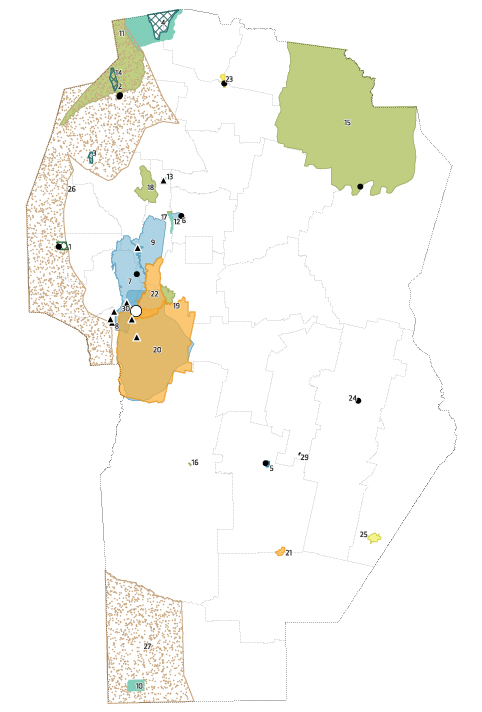

Relieve
Las sierras presentan pendientes y diferentes formas del terreno que influyen sobre la circulación del agua y la distribución de la vegetación.
Conocé las características naturales de la provincia y la relación entre el territorio, la sociedad y las problemáticas ambientales.
Córdoba posee una gran diversidad de ambientes, determinados por las características del relieve, el clima, el agua, los suelos y la vegetación.
Las Sierras de Córdoba constituyen uno de los principales ambientes naturales de la provincia. En ellas existen diferentes ecosistemas que cambian según la altura, el clima y las características del terreno.
Esta diversidad ambiental también hace que las actividades humanas tengan diferentes impactos sobre el territorio.

Las Sierras de Córdoba presentan diferentes ambientes naturales. Sus características cambian según la altura, el relieve y las condiciones climáticas.
Las sierras presentan pendientes y diferentes formas del terreno que influyen sobre la circulación del agua y la distribución de la vegetación.
Las condiciones climáticas influyen sobre los ecosistemas, la disponibilidad de agua y las actividades humanas.
La vegetación nativa protege el suelo, favorece la infiltración del agua y proporciona hábitat para diferentes especies.
Los ambientes serranos contienen numerosas especies de plantas y animales que forman parte de los ecosistemas cordobeses.
Las zonas serranas son fundamentales para las cuencas hídricas de Córdoba, ya que allí se originan numerosos ríos y arroyos.
Los ríos y arroyos cordobeses dependen en gran medida de las precipitaciones. Por eso, los períodos de sequía pueden afectar su caudal y la disponibilidad de agua.
La vegetación nativa ayuda a proteger las cuencas porque disminuye la erosión y favorece la infiltración del agua.
Cuando se pierde la cobertura vegetal, el agua puede escurrir rápidamente durante las lluvias, aumentando la erosión y modificando el funcionamiento de los cursos de agua.
Los bosques nativos cumplen funciones fundamentales para los ecosistemas. Conservan biodiversidad, protegen los suelos y contribuyen al funcionamiento de las cuencas hídricas.
Sus raíces ayudan a mantener la estructura del suelo y disminuir la erosión.
La vegetación favorece la infiltración y ayuda a regular el escurrimiento.
Proporcionan alimento y refugio para diferentes especies.
Los problemas ambientales de Córdoba están relacionados entre sí. Una modificación en un componente del ambiente puede generar consecuencias sobre otros.
Puede reducir la cobertura vegetal, favorecer la erosión y afectar la biodiversidad.
Pueden destruir vegetación, modificar el suelo y afectar los ecosistemas.
El crecimiento urbano sobre ambientes naturales puede provocar pérdida y fragmentación de hábitats.
La pérdida de cobertura vegetal puede aumentar el desgaste y pérdida del suelo.
La biodiversidad no incluye solamente animales. También comprende plantas, hongos, microorganismos y diversidad genética.
En Córdoba existen diferentes ambientes donde numerosas especies interactúan entre sí. La pérdida de hábitats, la contaminación, los incendios y la fragmentación pueden afectar este equilibrio.
Los polinizadores presentes en Córdoba, como abejas y mariposas, contribuyen a la reproducción de numerosas plantas silvestres y cultivadas.
Córdoba cuenta con parques, reservas naturales y reservas hídricas que permiten conservar sectores representativos de sus ecosistemas.

Fuente de la imagen: completar referencia.
El cambio climático puede intensificar diferentes problemáticas ambientales existentes.
El aumento de las temperaturas puede favorecer períodos de calor extremo.
Las modificaciones en las lluvias pueden afectar los recursos hídricos.
Las condiciones secas y las altas temperaturas pueden aumentar el riesgo de incendios.
Las sequías prolongadas pueden reducir la disponibilidad de agua.
La deforestación puede favorecer la erosión. La erosión puede afectar el agua. La pérdida de hábitats puede disminuir la biodiversidad. Los incendios pueden modificar el suelo y la vegetación.
Por eso, estudiar las problemáticas ambientales también significa comprender cómo funcionan y se relacionan los diferentes elementos del territorio.